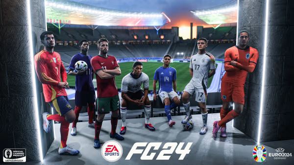
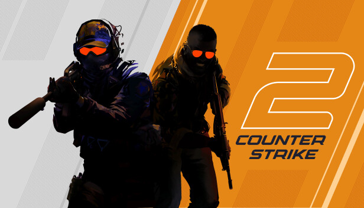
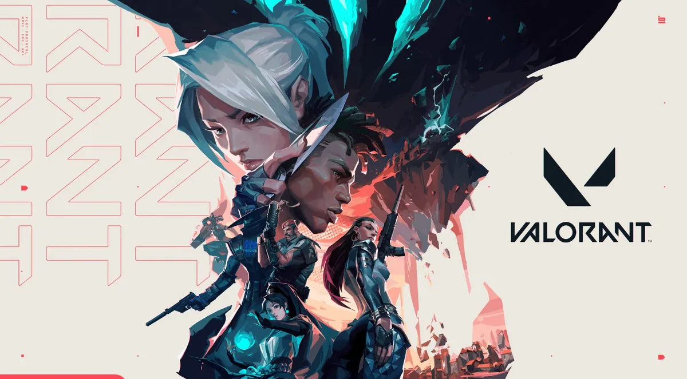
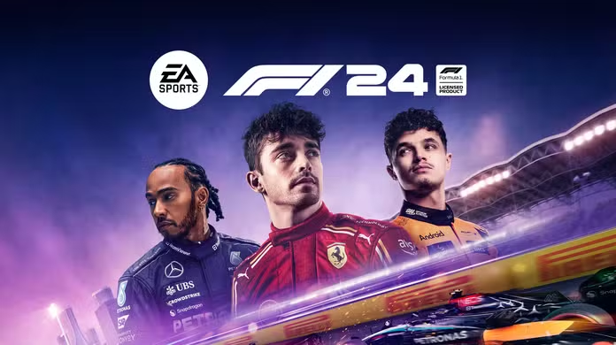
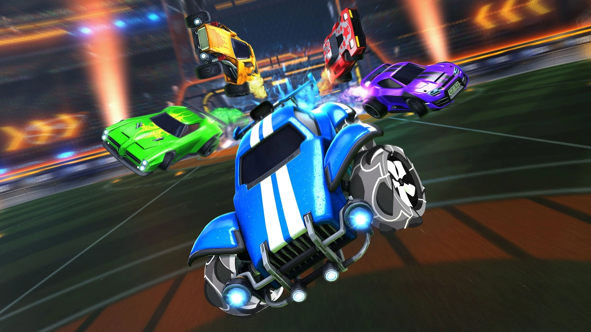

Uma lista com os melhores jogos e-sports na minha opinião
EA Sports FC 24
EA Sports FC 24 é o primeiro título da franquia de jogos de futebol a ser lançado pela EA Sports após
o fim da parceria de longa data com a FIFA. Lançado em 2023, este jogo representa uma nova era para a popular
série de simuladores de futebol, que anteriormente era conhecida como "FIFA". Apesar da mudança de nome, o jogo
mantém muitos dos elementos que fizeram da franquia um sucesso, mas também introduz novas características e melhorias.
Counter-Strike 2 (CS 2)
Counter-Strike 2 é a sequência do famoso jogo de tiro em primeira pessoa "Counter-Strike". Desenvolvido
pela Valve Corporation, foi lançado em agosto de 2023. O jogo traz melhorias significativas em relação ao seu
antecessor, com gráficos atualizados e uma nova engine, a Source 2.
Valorant
Valorant é um jogo de tiro em primeira pessoa desenvolvido pela Riot Games e lançado em junho de 2020.
O jogo combina elementos de tiro tático com habilidades especiais de personagens, criando uma mistura única de
estratégia e ação.
F1 24
F1 2024 é a mais recente adição à popular série de jogos de simulação de Fórmula 1 desenvolvida pela
Codemasters e publicada pela Electronic Arts. O jogo foi lançado em julho de 2024.
Rocket League
Rocket League é um jogo desenvolvido pela Psyonix que combina futebol com veículos acrobáticos.
Lançado em julho de 2015, o jogo se tornou muito popular devido à sua jogabilidade única e ao seu estilo de
competição acessível e envolvente.